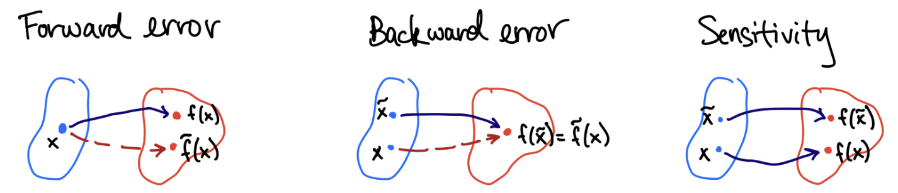

Lecture 2: Algorithms, Stability, Linear algebra review
Author
Jamie Haddock
Algorithms
A problem \(f(x)\) can typically only be approximated in finite precision (e.g., floating-point representation). A complete set of instructions for transforming data into a result is called an algorithm. In most cases, we can represent the output from the algorithm by another function \(\tilde{f}(x)\), and for the next few lectures, we will consider the algorithm to be executed in finite precision.
Example
Suppose our problem is to evaluate the value of a polynomial given a real input \(x\), \[f(x) = 5x^3 + 4x^2 + 3x + 2.\]
Here are two possible algorithms for evaluating this polynomial:
Evalate \(x^2 = x\times x\) and \(x^3 = x \times x^3\) with two multiplications, then calculate \(5x^3, 4x^2,\) and \(3x\) with three additional multiplications, and finally evaluate \(5x^3 + 4x^2 + 3x + 2\) with three additions, for a total of eight arithmetic operations.
Organize the polynomial as \(2 + x(3 + x(4 + 5x))\) which requires three multiplications and three additions, for a total of six arithmetic operations.
This savings may seem small, but saving 25% of the total operations can be huge when the numbe of operations is in the millions or billions!
Algorithms as Code
The technique we just saw in the previous example is known as Horner’s rule or algorithm We have that \(p(x) = c_1 + c_2x + c_3x^2 + \cdots + c_nx^{n-1} = c_1 + x(c_2 + \cdots + x(c_{n-2} + x(c_{n-1} + c_nx))).\)
Code
""" horner(c,x)Evaluate a polynomial whose coefficients are given in ascending (according toassociated monomial degree) order in 'c', at the point 'x' using Horner'salgorithm."""functionhorner(c,x) n =length(c) y = c[n]for k in n-1:-1:1 y = x*y + c[k]endreturn yend
horner (generic function with 1 method)
In the code above, the length function returns the number of elements in vector c. We use c[n] to access the \(n\)th element of vector c. The polynomial value is evaluated recursively in the for loop. Note the format for the range for k – it ranges from \(n-1\) to 1 with steps of size \(-1\).
Let’s use this function to evaluate the value a given polynomial!
Code
c = [-1,3,-3,1]horner(c,1.6)
0.21600000000000041
Stability
If we solve a problem \(f\) using a computer algorithm and we see a large error in the result, we might suspect that the problem has poor conditioning. However, it could also be that the algorithm introduced additional error. When error in the output of an algorithm exceeds what the problem conditioning explains, we say that the algorithm is unstable.
Case Study: Stability
We’re returning to the problem of calculating roots of a quadratic polynomial; that is finding values \(t\) such that \(at^2 + bt + c = 0\). In Lecture 1, we showed that this problem is ill-conditioned if and only if the roots are close together relative to their size.
Thus, find the roots of the polynomial \(p(x) = (x- 10^6)(x - 10^{-6}) = x^2 - (10^6 + 10^{-6})x + 1\) is a well-conditioned problem. As we saw previously, the quadratic formula is an algorithm for this problem.
Code
a =1; b =-(1e6+1e-6); c =1;@show x₁ = (-b +sqrt(b^2-4a*c)) /2a;@show x₂ = (-b -sqrt(b^2-4a*c)) /2a;
Since \(a = c = 1\), we’ll assume these are represented exactly, and consider only the condition number with respect to \(b\). We can see where the instability in the smaller root calculation came from by considering the condition number of each of the sub-problems encountered.
Problem \(f\)
\(\kappa_f\)
\(u_1 = f_1(b) = b^2\)
\(\kappa_{f_1}(b) = 2\)
\(u_2 = f_2(u_1) = u_1 - 4\)
\(\kappa_{f_2}(u_1) \approx 1\)
\(u_3 = f_3(u_2) = \sqrt{u_2}\)
\(\kappa_{f_3}(u_2) = 1/2\)
\(u_4 = f_4(u_3) = -(u_3 + b)\)
\(\kappa_{f_4}(u_3) \approx 5 \times 10^{11}\)
\(u_5 = f_5(u_4) = u_4/2\)
\(\kappa_{f_5}(u_4) = 1\)
We expect to lose 11 digits of accuracy in the fourth step of this algorithm. Here the issue is the subtractive cancellation between \(\sqrt{b^2 - 4ac}\) and \(b\)!
Note:
The quadratic formula is unstable for computing polynomial roots in finite precision! The problem of calculating the roots is not unstable (as we saw previously), it is simply that the specific computational steps we took to calculate this root is unstable as a subroutine is ill-conditioned.
We can compute this root with no error using a different algorithm!
Code
@show x₂ = c / (a * x₁);abs(x₂ -1e-6) /1e-6
x₂ = c / (a * x₁) = 1.0e-6
0.0
These two algorithms are equivalent when using real numbers and exact arithmetic, but the outputs they calculate in practice are perturbed by finite precision representation in each step and depend upon the specific order of operation.
Fact:
The sensitivity of a problem \(f(x)\) is governed only by \(\kappa_f\), but the sensitivity of an algorithm depends on the condition numbers of all its individual steps.
This may seem scary and complicated, but most simple operations are well-conditioned most of the time! Exceptions are usually due to \(|f(x)|\) being much smaller than \(|x|\), and the most common culprit (by far!) is subtractive cancellation.
Backward error
If a problem \(f(x)\) has poor conditioning, event just the act of rounding the data to floating-point representation may introduce large errors in the result. It’s not reasonable to expect that algorithms \(\tilde{f}\) will have small error in the sense that \(\tilde{f}(x) \approx f(x)\).
Numerical analysts instead prefer to characterize the error in a different way – instead of asking “Did you get nearly the right answer?”, we ask “Did you answer nearly the right question?”
Definition: Backward error
Let \(\tilde{f}\) be an algorithm for the problem \(f\). Let \(y = f(x)\) be an exact result and \(\tilde{y} = \tilde{f}(x)\) be its approximation by the algorithm. If there is a value \(\tilde{x}\) such that \(f(\tilde{x}) = \tilde{y}\), then the relative backward error in \(\tilde{y}\) is \[\frac{|\tilde{x} - x|}{|x|}.\] The absolute backward error is \(|\tilde{x} - x|\).
Backward error analysis causes us to ask “What is the problem our algorithm actually solved?” and to measure the distance between the ideal data and this alternative input to \(f\).

Code
usingPkgPkg.add("Polynomials")usingPolynomials
Resolving package versions...
Updating `~/.julia/environments/v1.11/Project.toml`
[f27b6e38] + Polynomials v4.0.13
No Changes to `~/.julia/environments/v1.11/Manifest.toml`
We need access to some code from the Julia package Polynomials. We first must use the pre-installed Julia package Pkg which we allow by using the command using Pkg. The command Pkg.add("Polynomials") installs the package Polynomials for the Julia installation to access. Note: we only have to do this once! Then, forevermore, we can use the command using Polynomials to allow access to these functions.
We can build the polynomial \(p\) from its roots, \(-2, -1, 1, 1, 3, 6\). We do this so we know the exact roots of the polynomial.
Next, we build a polynomial \(\tilde{p}\) from these approximate roots and check how far these output coefficients have deviated from the true coefficients.
Even though some computed roots were relatively far from the exact values, they are roots of a polynomial that is nearby to the ideal polynomial! In other words, we solved a problem nearby to the original problem, even if the results were quite far apart.
Fact:
For a poorly conditioned problem, we can really only hope for small backward error. Informally, if an algorithm always produces small backward error then it is stable. The converse is not ture – some stable algorithms may produce a large backward error!
As an example, the algorithm \(f(x) = x + 1\) is stable, but not backward stable. If \(|x| < \epsilon_{\text{mach}}/2,\) then the computed result is \(\tilde{f}(x) = 1\) since there are no floating points between \(1\) and \(1 + \epsilon_{\text{mach}}\).
Hence, the only choice for a real \(\tilde{x}\) so that \(f(\tilde{x}) = \tilde{f}(x) = 1\) is \(\tilde{x} = 0\). Then \(|\tilde{x} - x|/|x| = 1\) – 100% backward error!
Linear Algebra Review
Matrix Multiplication
There are two important (and equivalent) views of matrix multiplication. Let \(\mathbf{A} \in \mathbb{R}^{m \times n}, \mathbf{B} \in \mathbb{R}^{n \times p}\) and \(\mathbf{C} = \mathbf{A}\mathbf{B} \in \mathbb{R}^{m \times p}\).
The entries of \(\mathbf{C} = \mathbf{A}\mathbf{B}\) may be calculated by the inner product, \[\mathbf{C}_{ij} = \sum_{k = 1}^n \mathbf{A}_{ik}\mathbf{B}_{kj}.\]
The alternative view of matrix multiplication is as a sum of rank-one matrices formed as outer products of corresponding columns of \(\mathbf{A}\) and rows of \(\mathbf{B}\), \[\mathbf{C} = \sum_{k = 1}^n \mathbf{A}_{:k} \mathbf{B}_{k:}.\]
Matrix-vector multiplication
Using the previous interpretations of matrix multiplications, we can better understand the special case of matrix-vector multiplication. Consider computing \(\mathbf{A}\mathbf{v}\) for matrix \(\mathbf{A} \in \mathbb{R}^{m times n}\) and vector \(\mathbf{v} \in \mathbb{R}^n\).
We have that \[\mathbf{A}\mathbf{v} = v_1 \mathbf{a}_1 + \cdots + v_n \mathbf{a}_n\] where \(\mathbf{a}_i\) is the \(i\)th columns of \(\mathbf{A}\).
Fact:
Multiplying a matrix on the right by a column vector, \(\mathbf{A}\mathbf{v}\), produces a linear combination of the columns of the matrix.
We may transpose the matrix-vector product to get:
Fact:
Multiplying a matrix on the left by a row vector produces a linear combination of the rows of the matrix.
Fact:
A matrix-matrix product is a horizontal concatenation of matrix-vector products involving the columns of the right-hand matrix. Equivalently, a matrix-matrix product is also a vertical concatenation of vector-matrix products involving the rows of the left-hand matrix.
Recall the following important theorem:
Theorem:
The following statements are equivalent: 1. \(\mathbf{A}\) is nonsingular 2. \((\mathbf{A}^{-1})^{-1} = \mathbf{A}\) 3. \(\mathbf{A}\mathbf{x} = \mathbf{0}\) implies that \(\mathbf{x} = \mathbf{0}\) 4. \(\mathbf{A}\mathbf{x} = \mathbf{b}\) has a unique solution, \(\mathbf{x} = \mathbf{A}^{-1} \mathbf{b}\), for any \(n\)-vector \(\mathbf{b}\)
Theorem: Spectral Theorem
Let \(\mathbf{A}\) be a real, \(n \times n\) matrix. Then \(\mathbf{A}\) is symmetric if and only if \(\mathbf{A}\) is orthogonally diagonalizable.
Recall that this means \(\mathbf{A} = \mathbf{Q}^\top \mathbf{D} \mathbf{Q}\).